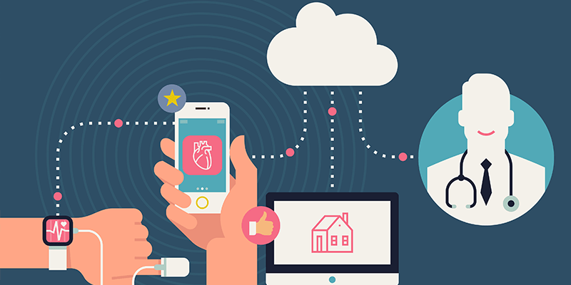
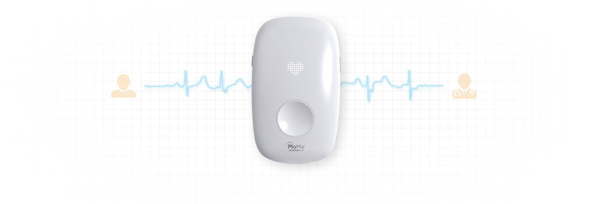
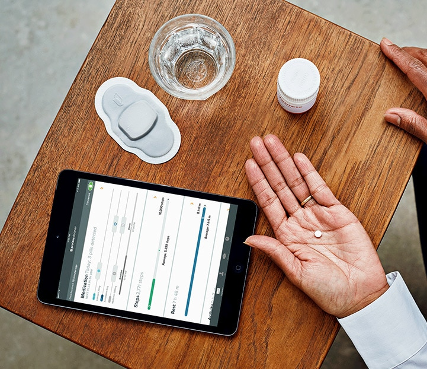
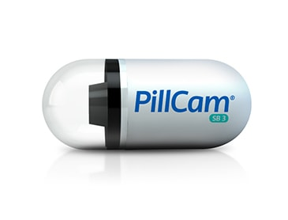
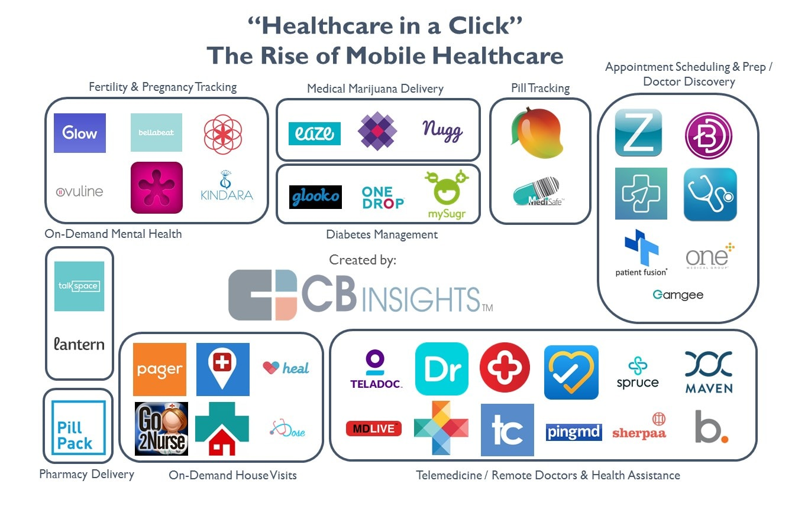
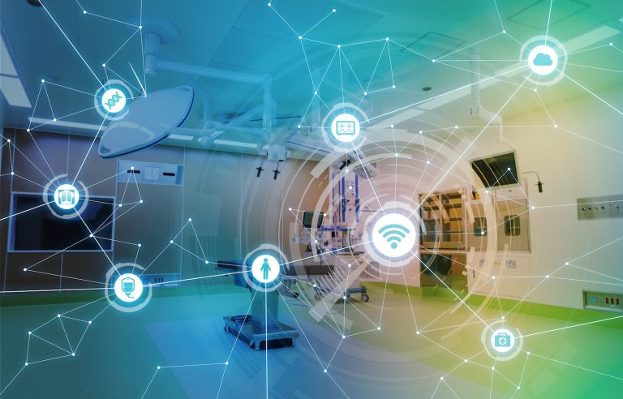
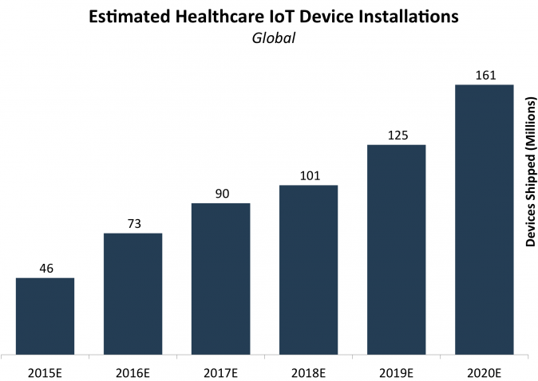

Những gì chúng ta đang tiếp cận là một thế giới nơi mà việc chăm sóc sức khỏe cơ bản sẽ trở nên xa tầm với hầu hết mọi người, một bộ phận lớn trong xã hội sẽ không sinh sản do tuổi già và mọi người sẽ dễ mắc bệnh mãn tính.
Có phải đó là sự kết thúc của thế giới mà chúng ta nghi ngờ? Dù thế nào, phát triển ứng dụng IoT là cứu cánh của bạn.
Mặc dù công nghệ có thể ngăn chặn dân số khỏi lão hóa hoặc loại bỏ các bệnh mãn tính cùng một lúc, nhưng ít nhất nó có thể giúp việc chăm sóc sức khỏe dễ dàng hơn trong túi tiền và về khả năng tiếp cận.
Chẩn đoán y tế tiêu thụ một phần lớn các hóa đơn bệnh viện. Công nghệ có thể di chuyển các thói quen kiểm tra y tế từ bệnh viện (trung tâm bệnh viện) đến nhà bệnh nhân (nhà trung tâm).
Chẩn đoán đúng cũng sẽ giảm bớt nhu cầu nhập viện.
Một mô hình mới, được gọi là Internet vạn vật (IoT), có khả năng ứng dụng rộng rãi trong nhiều lĩnh vực, bao gồm cả chăm sóc sức khỏe.
Việc áp dụng đầy đủ mô hình này trong lĩnh vực chăm sóc sức khỏe là một hy vọng chung vì nó cho phép các trung tâm y tế hoạt động hiệu quả hơn và bệnh nhân có được điều trị tốt hơn.
Với việc sử dụng phương pháp chăm sóc sức khỏe dựa trên công nghệ này, có những lợi ích vô song có thể cải thiện chất lượng và hiệu quả của các phương pháp điều trị và theo đó cải thiện sức khỏe của bệnh nhân.
Internet of Things cho phép thiết lập một mạng tập trung các thiết bị được kết nối với nhau có thể tạo và trao đổi dữ liệu trong một khung duy nhất. Tất cả dữ liệu đó cũng có thể được theo dõi và thu thập trong thời gian thực, điều này cung cấp sự tích lũy thụ động của các tài liệu phân tích. Về mặt tăng cường cho các cơ sở y tế, điều này có nghĩa là một bệnh viện thông thường có thể được biến thành một bệnh viện thông minh.
Đây là một cơ sở tiên tiến, nơi mọi thứ được theo dõi và quản lý đồng thời trong khi tất cả dữ liệu được thu thập trong cơ sở dữ liệu tập trung. Các tính năng công nghệ như vậy mở ra vô số khả năng để cải thiện sự tiện lợi, hiệu quả và thậm chí là các lựa chọn tiết kiệm ngân sách của các bệnh viện hiện đại.
Những lợi thế của ứng dụng IoT trong chăm sóc sức khỏe don don kết thúc ở đó. Công nghệ này có một lĩnh vực ứng dụng rất đa dạng trong y học. Hãy cùng xem một số triển khai chính.
Năm 2018, NHS England - một cơ quan hành chính không thuộc bộ phận điều hành của Bộ Y tế và Chăm sóc Xã hội đã tuyên bố rằng họ sẵn sàng hỗ trợ một giải pháp điều trị bệnh tiểu đường từ xa. Tuyên bố được đưa ra vào Ngày Đái tháo đường Thế giới 2018. Giải pháp là Máy theo dõi Glucose liên tục (CGM). Một thiết bị có kích thước bằng một đồng xu theo dõi mức đường huyết không ngừng sau khi nó được chèn vào một cánh tay bệnh nhân.
Dữ liệu giám sát có thể dễ dàng truy cập thông qua thiết bị Android hoặc iOS của bạn. Các phiên bản thị trường lớn của các sản phẩm như vậy là Freestyle Libre và Eversense. Các thiết bị theo dõi sức khỏe thông minh như vậy mang lại giá trị rất lớn cho nghiên cứu và điều trị bệnh nhân tiểu đường.
Cảm biến theo dõi glucose liên tục Eversense có thể được cấy vào cánh tay bệnh nhân và kéo dài tới 90 ngày.
Và trong nhiều trường hợp khác, các khả năng từ xa (còn gọi là telehealth) có thể khiến nhu cầu đến bệnh viện địa phương của bạn thực sự bị lỗi thời. Một giải pháp tuyệt vời cho bệnh nhân bị các vấn đề di chuyển.
Đi sâu hơn vào chủ đề từ xa, mạng IoT có thể kết nối và theo dõi thực tế bất kỳ cảm biến nào được đưa vào cơ thể người cho mục đích y tế. Điều này sẽ giúp ngăn ngừa ngừng tim (MoMe Kardia từ InfoBionic), tất cả các loại động kinh và cung cấp trợ giúp y tế cho các bệnh nhân nguy kịch ngay lúc đó.
Tổ chức Y tế Thế giới đã thực hiện một nghiên cứu vào năm 2003 để tìm ra rằng khoảng 50% các loại thuốc được kê đơn không được sử dụng đúng cách hoặc hoàn toàn bị bỏ qua. Một ví dụ nổi bật về việc giải quyết vấn đề này là giải pháp cảm biến ăn được phát triển bởi Proteus. Những cảm biến nhỏ bé này diễn ra theo toa và gửi tín hiệu cho một thiết bị nhận khi tan trong dạ dày. Một sáng tạo tiên tiến đáng kinh ngạc, thuốc thông minh Proteus chắc chắn sẽ giúp giảm tỷ lệ tiêu thụ không chính xác, vô nghĩa của các đơn thuốc y tế rất quan trọng. Bây giờ, đây là những gì người ta có thể gọi là một quản lý thuốc thực sự tiên tiến.
Mặc dù là một phần tiên tiến của công nghệ y tế, Porteus Smart Pills có kích thước nhỏ như những viên thuốc thực tế.
Ngoài ra còn có những viên thuốc thông minh có camera nhỏ, cho phép thuận tiện hình dung ra môi trường bên trong của một sinh vật.PillCam từ Medtronic là một ví dụ.
Còn được gọi là mHealth, cách thức theo dõi và chăm sóc sức khỏe của một người qua điện thoại di động có thể là một cứu tinh thực sự cho bệnh nhân hiện đại, thực tế tất cả những người sử dụng điện thoại thông minh thường xuyên. Sức khỏe di động là một lĩnh vực mới nổi đóng góp rất nhiều cho cả các tình huống y tế quan trọng và các trường hợp điều trị thường xuyên. Như chúng tôi đã đề cập trong phần monitoring Theo dõi bệnh nhân từ xa, các ứng dụng di động có thể đóng vai trò là phương tiện quản lý cho các thiết bị theo dõi sức khỏe.
Trong hình ảnh trên, đây chỉ là một phần nhỏ của những người khởi nghiệp đang cố gắng giành thị phần với ứng dụng di động của họ. Nguồn:www.cbinsights.com
Các ứng dụng này có thể được sử dụng làm trung tâm chăm sóc sức khỏe toàn diện của bạn, nơi bạn có thể truy cập thông tin y tế có giá trị, phân tích xu hướng hành vi của sinh vật, quản lý các cảm biến IoT được chèn vào cơ thể khác và liên hệ với bác sĩ của bạn chỉ bằng một cú chạm.
Đây là một giải pháp đặc biệt có giá trị đối với các quốc gia kém phát triển trên thế giới, nơi mọi người có thể đủ khả năng đến thăm bệnh viện thường xuyên, rất có thể, có điện thoại thông minh. Và chính phủ, lần lượt, có được một khả năng để xem dân số đang làm như thế nào về sức khỏe, tích lũy số liệu thống kê lớn. Có rất nhiều ứng dụng đã có sẵn trên thị trường, đa dạng về chức năng và mục đích:
Sự không hài lòng với cơ sở hạ tầng bệnh viện thiếu sót, khó quản lý là vấn đề chung của đại đa số các quốc gia hành tinh (ngay cả những nước đã phát triển). Khối lượng giấy tờ khổng lồ, những dòng dài và bực bội, và làm việc quá tải hầu hết các y tá và bác sĩ đều trải qua - đây là lúc vấn đề bắt nguồn.
Thực tế tất cả các tình huống như vậy có thể được đảo ngược với sự tích hợp của các giải pháp IoT. Các thanh ghi giấy khổng lồ, cồng kềnh có thể được thay thế bằng cơ sở dữ liệu tập trung, tự động, có thể được tăng cường thêm về độ tin cậy với blockchain và hợp đồng thông minh; một hệ thống quản lý duy nhất có thể nhận được đệ trình, giúp kiểm soát tối ưu hàng đợi và theo dõi các nhân viên thông qua điện thoại thông minh của họ; tất cả các thiết bị cũng có thể được giám sát và quản lý từ xa (ví dụ: tắt trong các trường hợp chưa từng có).
Những đổi mới này có thể giúp giảm đáng kể chi phí nội bộ cho bệnh viện, bảo tồn rừng và làm cho cả bệnh nhân và nhân viên y tế của Cuộc sống dễ dàng hơn. Năng suất tổng thể cũng sẽ tăng lên nhờ các giải pháp thông minh tự động Khả năng nhận ra ngay lập tức các vấn đề sức khỏe mà phải mất hàng tháng chẩn đoán bác sĩ trực tiếp.
Với thiết bị đeo, cảm biến, phân tích dữ liệu và cơ hội di động do IoT cung cấp, việc chiến đấu với các bệnh mãn tính trở nên hiệu quả và dễ tiếp cận hơn. Vấn đề là, các vấn đề sức khỏe định kỳ phải được theo dõi và phân tích trong thời gian dài. Bằng cách đó, các xu hướng trong biến động của bệnh có thể được xác định và bổ sung để được điều trị hiệu quả nhất.
Tất cả những gì công nghệ cho phép làm điều đó, với nhiều khả năng bổ sung được cung cấp bởi sự tích hợp của blockchain và AI lên trên đó. Điều này rất quan trọng khi nói đến các vấn đề sức khỏe khó hiểu và thiếu sót như những bệnh mãn tính.
Internet of Medical Things dường như là một cuộc cách mạng và hiệu quả cao, vẫn còn một số thách thức lớn của IoT trong chăm sóc sức khỏe, khái niệm công nghệ này phải vượt qua. Với các tích hợp lớn, thay đổi trò chơi như cái này, đi kèm với vô số khó khăn kỹ thuật và các vấn đề thích ứng.Bao gồm:
Xem xét các thách thức nêu trên của IoT trong chăm sóc sức khỏe, thực sự, có những nhược điểm cũng như lợi ích khi nói đến IoT y tế.
Kết nối toàn bộ các thiết bị y tế và tập trung dữ liệu mang lại nhiều lợi ích đáng kể ,như:
Ngoài ra, một số nhược điểm đi kèm với việc triển khai IoT trong chăm sóc sức khỏe bao gồm:
Năm 2019, có thể được xác định một số xu hướng IoMT được thực hiện bởi phần lớn các công ty khởi nghiệp trên toàn thế giới.
Các bệnh viện thông minh đầy đủ vào năm 2020, mHealth như một điều thường xuyên, phổ biến trên phạm vi toàn cầu và giảm các chuyến thăm vật lý đến bệnh viện - đây chỉ là một bức tranh gần đúng về thành công của IoMT. Với điều đó đã được nói, khi còn trẻ như khái niệm này, nó thực sự được coi là cuốn tiểu thuyết của các bệnh viện tiến bộ hiện nay. Hầu hết trong số họ đang thực hiện các kỹ thuật và khả năng chính của IoT hoặc đã có các phần nâng cao đang trong giai đoạn hiệu chuẩn.
Ước tính, cơ sở cài đặt các thiết bị IoT trong chăm sóc sức khỏe sẽ có hơn 161 triệu đơn vị vào cuối năm 2020. Nguồn: Business Insider
Theo một số dự đoán độc lập, gần 90 phần trăm các cơ sở và tổ chức chăm sóc sức khỏe trên toàn thế giới sẽ sử dụng IoT như một công cụ nội bộ thông thường vào cuối năm 2019. Vì vậy, 'bây giờ' của IoT chăm sóc sức khỏe là khá sống động, với tương lai của nó nhìn còn sáng hơn.
Chúng ta hãy nhấn mạnh một lần nữa rằng IoT có thể không phải là một cuộc cách mạng trong lĩnh vực quan trọng trên quy mô toàn cầu như chăm sóc sức khỏe. vẫn còn nhiều khó khăn, đặc thù và những trở ngại công nghệ cần khắc phục. Và mặc dù có, hiện tại, những nhược điểm cũng như lợi thế của khái niệm này, mọi thứ dường như rất tốt cho sự đổi mới công nghệ này.
Chúng tôi khá tự tin rằng nếu bạn hỏi hầu hết các chuyên gia y tế về ý kiến của họ về vấn đề này, họ sẽ nói rằng tích hợp và thích ứng IoMT đầy đủ là cách phát triển logic duy nhất cho y học tiên tiến trong tương lai.
Với điều đó đã được nói, hãy tận hưởng những trái cây cứu rỗi, cải thiện sức khỏe của tiến bộ công nghệ lớn.